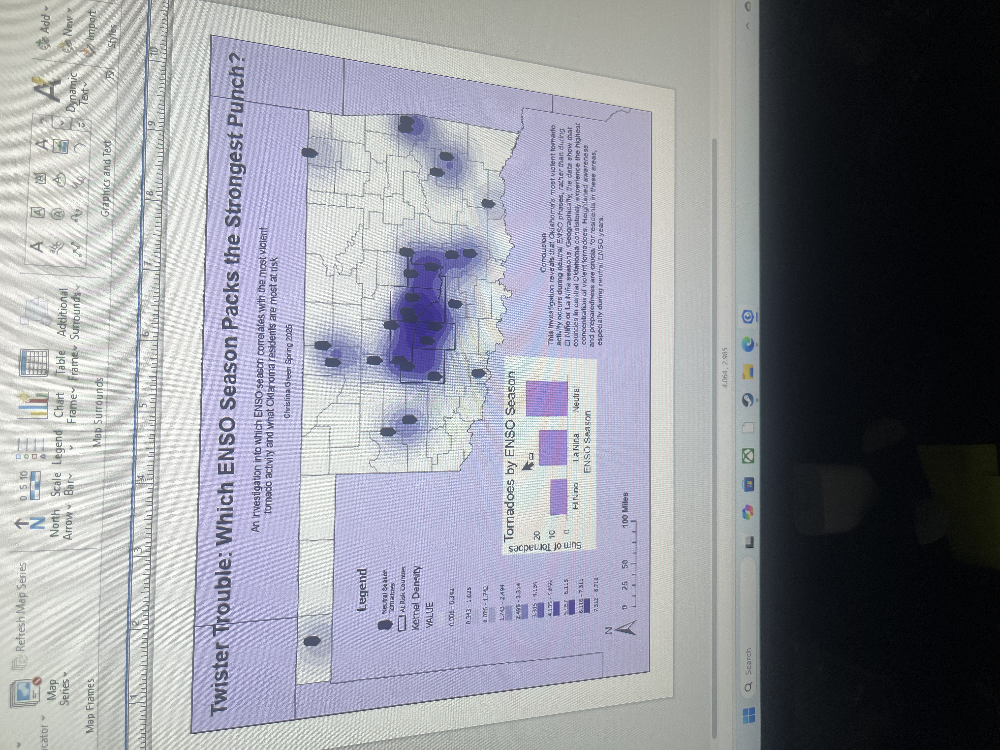

Cartography Projects
Your cover photo will appear here
images/IMG_1025.JPG

Temporal Expansion of Antarctic Research Infrastructure
I’ve always been fascinated by polar exploration history, so I built a map series tracking how Antarctic research stations have grown and shifted across five distinct eras, from the 1895 Heroic Age all the way to modern-day science. Using ArcGIS Pro, I took raw facility data from the Council of Managers of National Antarctic Programs (COMNAP), cleaned it up into spatial points, and layered it over British Antarctic Survey boundary shapefiles.
To give the maps a bit more depth, I brought in a Digital Elevation Model (DEM) and slightly exaggerated the terrain, which added subtle texture without distracting from the historical data. It’s a really cool visual of how global politics and technology have shaped humanity’s footprint on the ice over the last century.
Your map will appear here
images/Screenshot 2026-02-18 192613.png

Shawnee Mission Park Disc Golf Maps
For this project, I wanted to combine my GIS background with graphic design to build a practical cartographic package for a new disc golf course at Shawnee Mission Park. I used ArcGIS Pro to map the layout accurately and then pulled the vector files into Adobe Illustrator to style everything.
The final deliverables were a large, detailed kiosk map for orientation at the trailhead and a pocket-sized handheld map with a built-in scorecard on the back. My main focus was making sure the wayfinding was super intuitive so players actually have clear, user-friendly maps whether they’re standing at the first tee or out on the course.